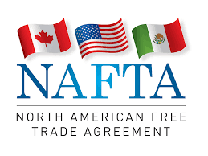

Apa itu Kerjasama Regional?
Kerjasama regional adalah bentuk kolaborasi antara negara-negara yang berada dalam satu kawasan tertentu untuk mencapai tujuan bersama.
Kerja sama ini biasanya didasarkan pada kesamaan kepentingan, sejarah, budaya, ekonomi, atau tantangan yang dihadapi negara-negara tersebut.
Berbeda dengan kerjasama bilateral, kerjasama regional ini memiliki anggota yang lebih banyak. Kerjasama regional juga tentunya memiliki tujuan-tujuan yang lebih besar.

Manfaat-Manfaat Kerjasama Regional:
Meningkatkan pertumbuhan ekonomi melalui eksport maupun import
Mendapatkan wawasan-wawasan yang lebih baru mengenai negara luar
Dapat menyebarkan budaya, tradisi maupun ilmu yang dapat ditukar dengan negara lain.
Tantangan Kerjasama Regional:
Perbedaan tingkat pembangunan antarnegara anggota.
Konflik yang muncul karena adanya perbedaan ide maupun kepentingan yang muncul dalam diskusi.
Adanya ketidakpercayaan yang muncul diantara para pimpinan/wakil negara di kawasan tersebut.
Contoh-contohnya:
ASEAN (Association of Southeast Asian Nations): Kerja sama antara negara-negara Asia Tenggara di bidang ekonomi, politik, keamanan, dan budaya.
Uni Eropa (European Union): Kerja sama regional yang lebih tertruktur dan juga mencakup pasar tunggal tentang pemberlakuan mata uang bersama (Euro) di wilayah Eropa.
NAFTA/USMCA: Perjanjian perdagangan bebas antara Amerika Serikat, Kanada, dan Meksiko untuk memperkuat ekonomi regional di wilayah Amerika Utara.
SAARC (South Asian Association for Regional Cooperation): Kerja sama negara-negara Asia Selatan untuk pembangunan ekonomi, sosial, dan budaya.


.png)
.png)
.png)
.png)
.png)